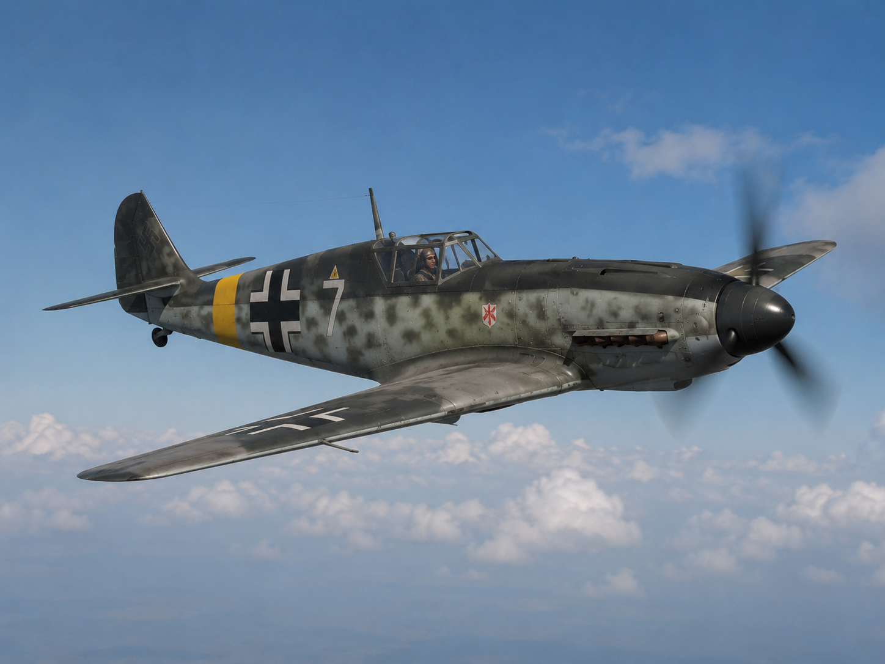
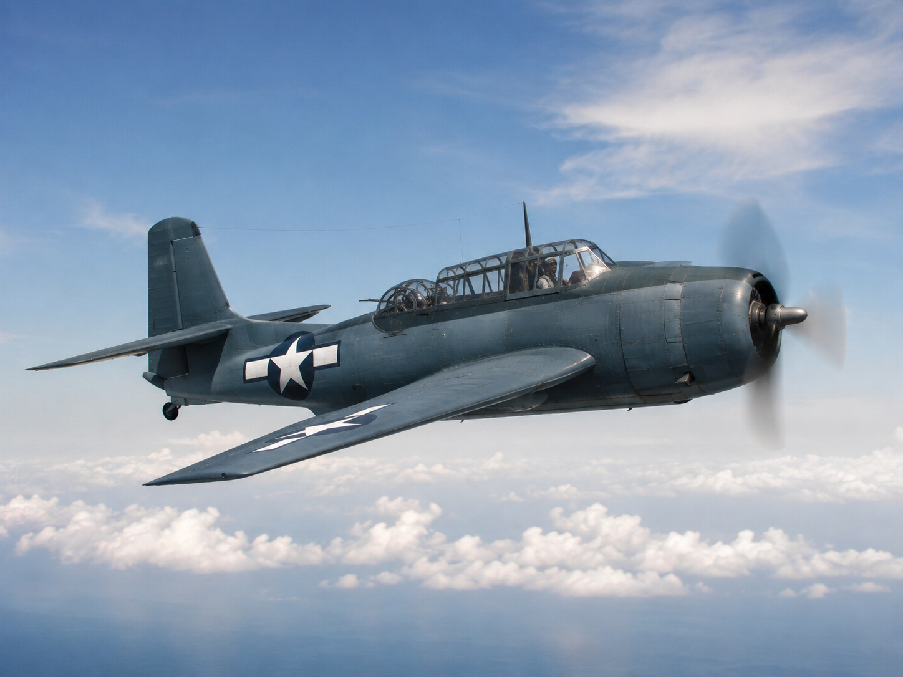
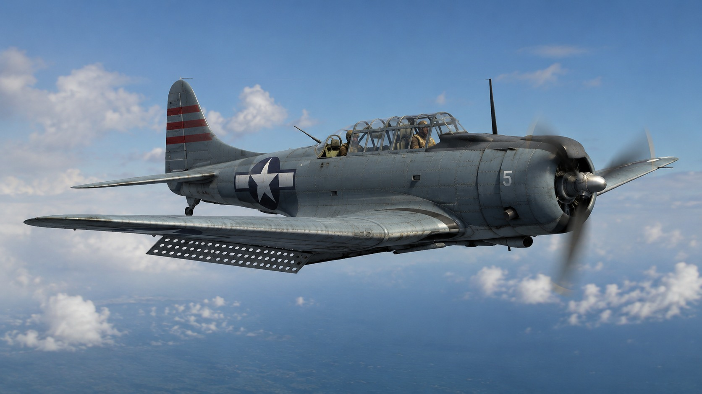

Hawker Hurricane
Airfix 1/48 Hawker Hurricane Mk.I
★★★★☆Best first RAF fighter
Review: Good fit, visible cockpit, Battle of Britain schemes and forgiving RAF camouflage.
Kit buying should feel like a build plan, not a dead list. Use these routes to pick a kit, decide what aftermarket is actually worth buying, and jump to useful shop searches.
This is the main hub for the kit and aftermarket guidance that sits across the aircraft pages: ratings, best-use notes, aircraft guide links and product/seller routes.
Review: Good fit, visible cockpit, Battle of Britain schemes and forgiving RAF camouflage.

Review: Excellent surface detail, masks/PE in ProfiPACK boxings and huge decal potential.

Review: Strong variant coverage, excellent decals and ideal for RLM paint/weathering routes.

Review: Great for late-war Luftwaffe camouflage, cockpit detail and visible radial-engine/exhaust staining.

Review: Clean engineering and perfect for polished metal prep, 8th AF markings and restrained panel work.

Review: Excellent engineering, big presence, natural metal or olive drab routes and strong weathering potential.

Review: Excellent Pacific subject with masks, cockpit detail, blue finish weathering and carrier-deck stories.

Review: Gull wing, big radial, US Navy/Marine schemes and excellent island-strip weathering potential.

Review: Clean build route into Japanese colours, chipping restraint and Pacific theatre context.

Review: Big display impact, mission history and strong aftermarket value from masks/wheels/barrels.

Review: Large, impressive and ideal for nose art, weathering and mission-specific display planning.

Review: Carrier-deck context, dive brakes, weathered US Navy finish and strong Pacific story value.
The same rule applies across the aircraft pages: buy visible upgrades first, then decals if they unlock a better story.
Best value on almost every WW2 aircraft with framed glazing.
Worth it when the canopy is open or the cockpit is prominent.
Good on heavy aircraft, exposed guns, radial engines and large-scale builds.
Best when they unlock a specific squadron, pilot, theatre or mission.
Poor value if the fuselage closes and the detail disappears.
Specific Alex Aftermarket routes added to aircraft Build Guide → Aftermarket tabs. Check scale, kit compatibility and stock before buying.
Useful entry routes into kits, paints, techniques and theatre-led WW2 aircraft builds.
How the site is built, how ratings are judged, and how to suggest corrections.